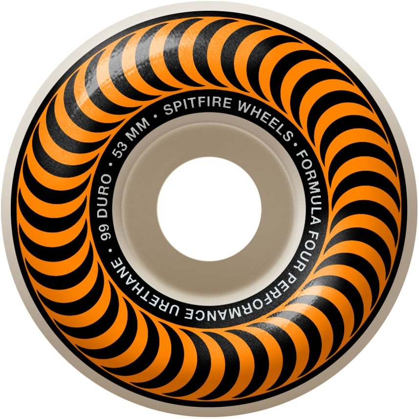
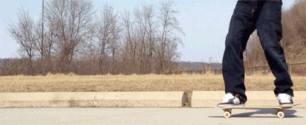
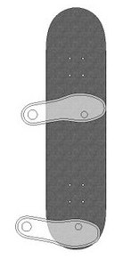
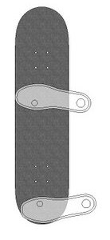
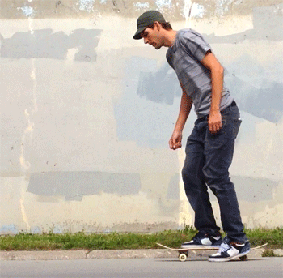

Welcome to "My Skate Journey". I started this page to
do at least two things at the same time: write/blog about my progress in skating and
learn html. My background is math and physics which sometimes required using computers,
but I've always been interested in learning other aspects of
computers and networking. I am going to try to include JavaScript, Python, and
maybe some SQL as well. But, I will mostly be just writing about my skating progress.
The beginning - 2016(?)
My journey began initially in 2016 give or take a year. I got my first board from
this place called the Zombie Boardshop in Burnsville, MN.
The board I got was, I'm pretty sure, an 8.25" with maybe 140mm(?) indy trucks and 53 mm Spitfire wheels.
I couldn't find an online graphic for the board, but here's one of the wheels.

I don't know if they are exactly those wheels since the graphics are faded, but
I'm pretty sure they are those wheels. I skated around a nearby trail to try and
get used to simply riding. I quickly found that the learning curve is very high.
I also didn't know just how athletic one has to be to skate.
The riding was slow and difficult with the 53 mm wheels. But, for about a few months,
I just rode around and practiced kick-turning. I recommend cruiser 58 to 60 mm
wheels for anyone wanting to just learn to ride. The kick-turn is a way of changing
direction with the board by shifting weight from the front feet to the back foot
slightly so the nose lifts up and you pivot to point the nose in a new direction.
Just to clarify - I'm not going to attempt to explain or teach how to do tricks since
I'm learning myself. I'm only just sharing my experience but also give some context.
Anyway, I found this site that
shows this gif of "tic-tac"-ing. It's a way of using kick-turns to gain forward momentum.

I feel that I got pretty comfortable with that technique, but I will say that if
you are skating like this, I highly recommend BENDING your knees and using
your upper body to turn as well. I feel that one can twist their legs too much
at the knee which can cause later problems.
But before that, there is also carving - turning without lifting the board up.
You shift your weight left or right in order to naturally get the board to go
right or left. I also ride REGULAR. Here is a jpg borrowed from the site linked earlier.
 The Nose points up the page.
This is REGULAR.
 The Nose points up the page.
This is GOOFY.
But, with riding, I never tried riding switch. Just regular, no fakie. And, always on
flat ground. I think I focussed too much on wanting to ollie so bad that
I overlooked some of those fundamental motions. Yet, within those few months, I did
learn to ollie, albeit a beginner's ollie. I had trouble committing and getting my
back foot up in the air. And just when I started getting it, I quit for at least 3
or 4 years.
Oh, and just in case you didn't know what an ollie was, here's a gif of some badass
laying it down for you!
The gif is actually from a YouTube video. Here's the
link to the original video
by Braille Skateboarding.
As a side note: Braille Skateboarding is a great place
to watch instructional videos on many skateboarding techniques and moves!
Much later - 2021
During the summer of 2021, I don't why exactly, but I wanted to get back into skating.
It might have been because of the Tokyo olymplics, my desire to spend time outside, or
a combination of reasons. Either way, in mid-July, I picked up the board again and started
just riding around. I found a spot by a like with a small, fairly level paved trail.
It had just enough slope to get used to some speed, but not too much. I spent about 2 weeks just
practicing pushing as though it was the first time all over again. PUSHING is the
technique of accelerating yourself on the board. Here's a gif. I practiced riding switch, too.

Going around the small trail, I just practiced pushing, kick-turns, carving and going down
small slopes. After those two first weeks, I felt I was moving to slow to get used to
the feeling of actually skating, albeit on flat ground. So, I ended up back at the same
skate shop and got some new wheels. They
weren't super expensive, mostly because I just wanted to experiment.
The new wheels were 58 mm. With new bearings and new wheels, I tried them out at the lake.
HOLY CRAP. I should have tried that YEARS ago. I started having an easier time
cruising over cracks and even small branches pebbles (still irritating), and it allowed me
to really start moving. But, I still felt uneasy trying to ollie. I thought that to
overcome the fear of falling, I would try bombing small hills just to get used to the
feel of the board, speed, and carving.
Here's a YouTube video that shows pretty damn extreme hill bombing. I only did smaller
hills where I know I could have room to slow down. But, looking back, I should have been
WAAAY more careful (cars, skatepads). I always wear a helmet though! I need my brain, LOL.
So, getting used to the speed with the little bit of associated danger, I did fall a couple
of times which helped me get used to the idea that falling is a sort of normal thing
to expect when skating. You can play it safe by just riding over mostly flat ground. But,
if you're trying to learn new stuff, you might expect to fall sometimes. You can
click here to see an explanation
on "How to Fall". Once I did that, I started trying to ollie again. I watched a lot
of YouTube videos, but more than anything, I just RODE AROUND. I knew I had to get
comfortable on the board. BTW, I still was using the old 8.25" deck from before. Between when
I started skating and 2021, I did get another deck set up (same 8.25").
August 2021
For the first time, I went to a skatepark. I tried getting used to just riding up a quarter pipe and
rolling back down in switch. It was definitely weird at first and I'm still getting used to it.
Skating is really weird in that sometimes going faster makes doing something way easier but going slow can
really hurt you bad. However, the tradeoff is still when you go faster, you can get hurt more sometimes, too, LOL.
I feel like this happened to me a few times for sure. While I was at the park, I tried a small quarter pipe.
I didn't have access to a mini halfpipe which I wish I did, but this park worked ok. The small quarter pipe
had a flat ramp in front of it that was pretty mellow. It helped a lot. Then there was the same set up, but steeper
flat ramp. This was pretty freaky. I really had to trust the board. I don't know how I didn't die, LOL.
Anyway, at one point, may be I got tired, I was coming back down the pipe in switch and suddenly fell forward
(away from the pipe) and slammed hard on my side on the concrete. It really hurt bad. I got up fine and
starting over again. A day later, I got some real dark bruising and my elbow swelled (all good now).
Even though I healed, it provoked me to invest in some knee and elbow pads and wrist guards. I went to
a different, slightly bigger park, and I fell a few times. Damn, the pads really saved my butt
(I mean my knees, wrists, and elbows)! It was all triple eight gear on sale on Amazon in case you
might be wondering.
But, my side still hit the ground, so I even got some "bumsaver" pads. Haven't tried
them yet, but if they're anything like the other ones I got, I'll be well protected. At this second park,
I got more confident on ramps, riding switch and practi kick-turns on the pipes and flat ramps. It was
definitely one the best practice sessions I've ever had.
I hadn't mentioned this yet, but I feel that stance and form is extremely important. I try to
always remember to bend my knees and use my upper body more. I sometimes get knee pain/discomfort
from skating. To help with that, I started going back to gym to strengthen my legs and do yoga. I also
take joint supplements. The combination has helped so far. Also, REST is extremely important. If you skate
tired or sore, YOU WILL INJURE YOURSELF. So, if I have any words of any adice to give, it's this:
TAKE CARE OF YOUR BODY BEFORE EVERYTHING ELSE!
So, here's a short summary of what I wished I had done:
Gotten pads and protection before going to the park.
Tried bigger 58 to 60 mm wheels.
Go to the gym for stretching and light strength training.
Gotten better shoes. I have Lakai Cambridge right now. The grip makes the difference,
as well as durability. Vans slipped sometimes with less grip and were less durable.
You can use seude or leather and
SHOE GOO to patch "ollie"holes.